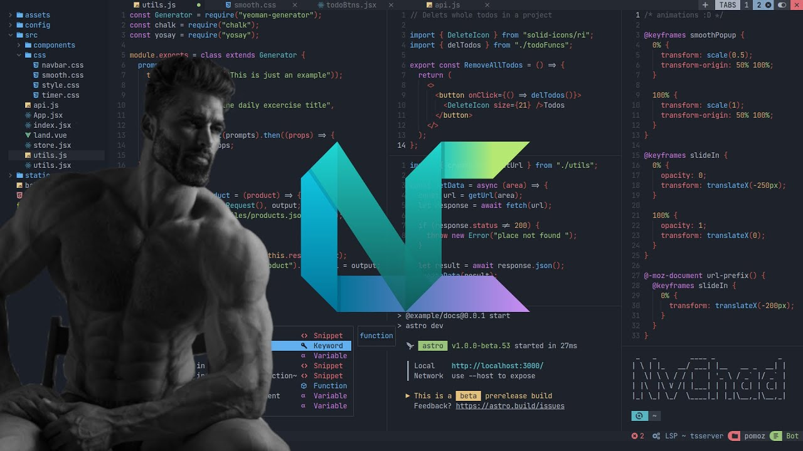
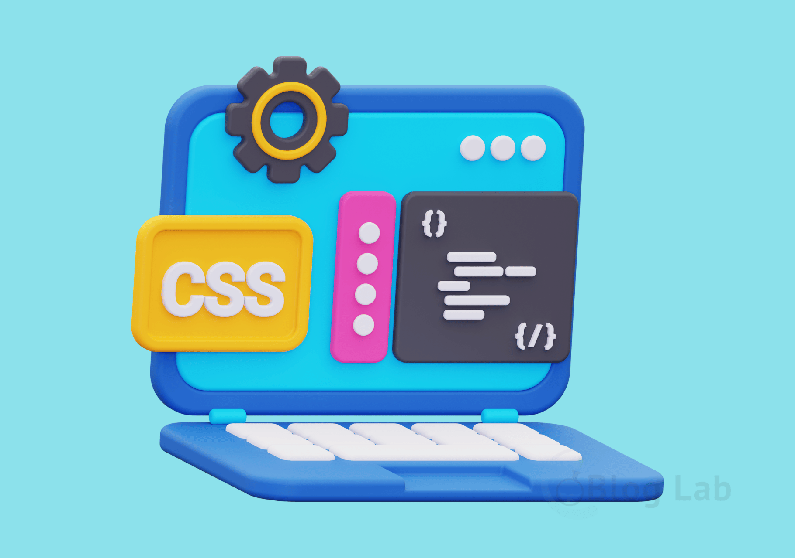

Laptop (Thinkpad T60)
Sebagai seorang web developer, Laptop adalah media utama saya untuk
mewujudkan visi digital saya. ThinkPad T60 menjadi mitra setia dalam
perjalanan saya mempelajari tentang pengembang web. Bersama dengan
laptop ini, saya terus mengasah keterampilan dan pengetahuan saya.
walaupun sering ng-Hank.
Dilengkapi dengan prosesor Intel Core Duo T5600, RAM 2GB DDR2 SDRAM,
HDD
cuma80GB, layar 14.1 inch TFT LCD dengan resolusi
1400x1050 piksel dan Os KALI LINUX, Lenovo ThinkPad T60 ini adalah
satu-satunya laptop yang saya miliki untuk menemani aktivitas
belajar saya sehari-hari. Selain itu, laptop ini dilengkapi dengan
beragam fitur konektivitas seperti Wi-Fi 802.11a/b/g, Bluetooth, dan
port USB 2.0, menjadikannya pilihan yang cocok untuk kebutuhan
bisnis dan produktivitas.
18 tahun yang lalu tapi.
Text Editor (Neovim Nvchad)

Sebuah text editor adalah teman setia bagi para pengembang dan
penulis, menjadi medan kreativitas di mana ide-ide mengalir
bebas.Text editor memungkinkan kita untuk mengedit, dan mengelola
kode atau tulisan dengan mudah dan efisien. Dan saya memilih Neo VIM
karna ia
RINGAN di laptop saya.
Neo VIM, sebuah text editor yang menginspirasi, memungkinkan
pengguna untuk mengeksplorasi kreativitas mereka tanpa batas. Dengan
antarmuka yang elegan dan beragam fitur yang dapat disesuaikan, Neo
VIM menjadi mitra setia bagi para pengembang dan penulis dalam
perjalanan mereka menuju pencapaian yang luar biasa. Dari mengkode
hingga menulis, Neo VIM membuka pintu menuju dunia yang penuh
inovasi dan kemungkinan tak terbatas.
asheek
My Journey
Tidak ada yang dapat menyamai kegembiraan ketika saya memulai
perjalanan belajar HTML dan CSS. Dari mengatur struktur dasar dengan
HTML hingga menambahkan sentuhan kreatif dengan CSS, setiap langkah
memberikan kepuasan tersendiri. Belajar HTML dan CSS bukan hanya
tentang menguasai teknik, tetapi juga tentang menemukan keajaiban
dalam menciptakan sesuatu dari awal. Di tambah dengan hadirnya
Javascript yang membuat keajaiban itu lebih nyata ,
logika-logika di dalam nya memberikan saya pelajaran yang sangat
banyak, mulai dari ketelitian , kedisiplinan, kebersihan,
kenyamanan, kesempurnaan cintaaaa.. aa. aa ..
Pengalaman ini telah memberi saya fondasi yang kokoh dan kepercayaan
diri untuk terus menjelajahi dunia kreativitas di dunia web.
HTML HyperText Markup Language

HTML adalah singkatan dari HyperText Markup Language. Ini adalah
bahasa markup yang digunakan untuk membuat struktur dasar dari
halaman web. HTML menggunakan tag-tag untuk menandai elemen-elemen
dalam halaman web, seperti judul, paragraf, gambar, dan tautan.
Ini adalah fondasi dari setiap halaman web dan memungkinkan untuk
menyusun dan menyajikan konten secara terstruktur di internet.
CSS Cascading Style Sheets

CSS adalah singkatan dari Cascading Style Sheets. Ini adalah
bahasa gaya yang digunakan untuk mengatur tampilan dan gaya dari
elemen-elemen dalam halaman web yang ditulis dalam HTML. CSS
memungkinkan pengguna untuk mengontrol warna, ukuran teks, tata
letak, dan banyak aspek lain dari presentasi visual sebuah halaman
web. Dengan menggunakan CSS, pengembang web dapat menciptakan
desain yang menarik dan konsisten di seluruh situs web.
Javascript

JavaScript adalah bahasa pemrograman serbaguna yang digunakan
untuk membuat situs web interaktif, aplikasi web, dan bahkan
perangkat lunak server. Dengan sintaksis yang mudah dipahami dan
fleksibilitas yang luas, JavaScript memungkinkan pengembang untuk
menghidupkan ide-ide pada situs-situs dengan interaktivitas
kreatif mereka menjadi kenyataan di dunia digital.
Portofolio